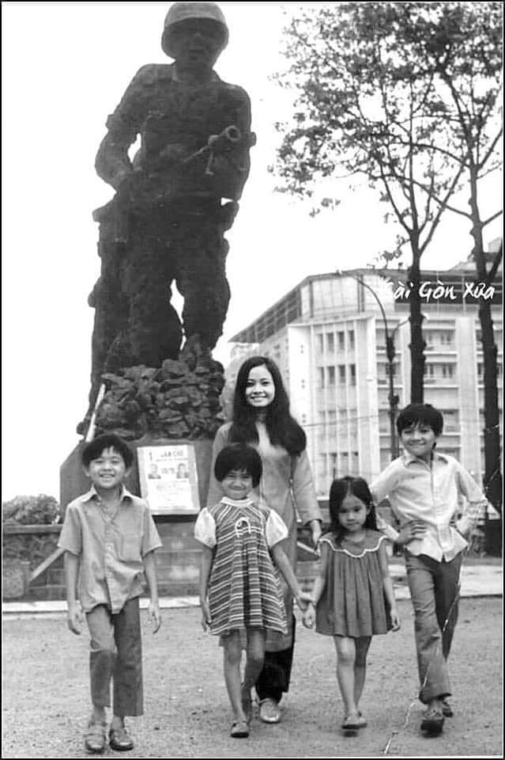

Để bắt đầu cho một cuộc hành trình tìm nơi định cư, ba tôi chọn Sài Gòn sau tìm hiểu về phong tục tập quán và đó cũng là thủ đô của nước Việt Nam còn được gọi tên Hòn Ngọc Viễn Đông. Chỉ nghe cái tên đẹp đẽ đó thôi bầy con nít anh chị em chúng tôi lúc bấy giờ đã hình dung ra một nơi thật đẹp như trong những câu chuyện thần tiên, nơi chỉ có trong những giấc mơ tiên.
Thế là một buổi sáng nơi sân ga Quảng Trị, cơn mưa đầu mùa rơi thật nhẹ từ bầu trời cao không đủ làm ướt áo, mưa như những giọt sương mong manh bám nhẹ trên cây cỏ. Gia đình chúng tôi lên chuyến tàu lửa để đi vào miền Nam trong sự háo hức anh chị em tôi, trong niềm tin mạnh mẽ của ba,người đàn ông gan dạ mang nhiều hoài bão với bản tánh phiêu lưu mạo hiểm. Còn mạ tôi, một người đàn bà chân chất với ruộng nương khoai sắn, tầm nhìn hạn hẹp loanh quanh trong lũy tre làng bụi mù đất đỏ, hồn nhiên giặt dũ bên dòng sông Thạch Hãn những ngày nắng hạn nước trong xanh biếc chảy êm đềm cùng giấc mơ thiếu nữ hiền hòa cam phận. Rồi tới khi lập gia đình mạ tôi với tình yêu tuyệt đối dành cho người chồng với trái tim thủy chung không bao giờ ngần ngại cùng nắm tay nhau mấy sông mấy núi cũng lặn lội theo sát bên cạnh chồng mình.
Lúc đó tôi cô bé với nước da đen dòn như những dân tộc thiểu số sống trong rừng trong rú thật hoang sơ, dưới hàng lông mày rậm đôi mắt to ngơ ngác như những con chim se sẻ dễ thương, vẻ nhìn ngơ ngác tới cô giáo tiểu học phê bình trong học bạ, cô ghi " Trong lúc học hay nhìn ra ngoài cửa lớp ".
Cô bé chỉ đưa mắt nhìn những vạt nắng xuyên qua cánh lá xanh mướt trên những cành cây cao, để tìm những chú chim non đang đùa hót vô tư. Khi mùa mưa tới nhìn mưa bay nhẹ rơi xuống mái hiên trường tìm coi đàn chim se sẻ đã có chỗ an toàn để trú mưa chưa với tâm hồn thơ ngây đẹp như những bông hoa dại trên cánh đồng mênh mông.
Tuổi thơ hồn nhiên ngu ngơ khi vừa đặt chân xuống sân ga rộng lớn Sài Gòn, một nơi chốn đầy tiện nghi văn minh đến choáng ngợp trong đôi mắt cô bé nơi tỉnh nhỏ, không như sân ga nơi quê nhà chật hẹp với vách tường loang lổ bám đầy rêu phong, nhà ga với những hàng ghế theo thời gian màu sơn cũng bị phai mờ, đôi mắt vốn ngơ ngác của cô bé thì lại càng ngơ ngác hơn thêm trước khung cảnh mới lạ lần đầu được nhìn thấy tận mắt.
Người ra đón nơi ga tàu hôm đó là dì dượng của tôi, họ rời quê nhà Quảng Trị sớm hơn chúng tôi rất nhiều năm trước đó, nhìn qua sự hiểu biết sành sõi của Dượng khi đứng ra chỉ huy sắp xếp cho gia đình chúng tôi thật nhanh và gọn gàng không giống như ngày nào sống ở quê nhà mà trái lại cho tôi có cảm tưởng giống hệt như người được sinh ra ở Sài Gòn.
Chúng tôi lên xe taxi, anh chị em ngồi sát bên nhau trong niềm vui toát lên gương mặt rạng ngời được đưa về cơ ngơi của họ. Đó là căn nhà sàn trên dòng kinh nước đen nằm sau ngôi chợ Trương Minh Giảng lúc bấy giờ.
Trước mắt tôi những dãy nhà sàn san sát cạnh nhau thật thân tình và ấm cúng, nhìn những người sinh sống ở nơi đây sao mà giống như người trong một gia đình. Khi chúng tôi vừa đến nơi ai cũng bước ra trước cưả với nụ cười thật tươi để chào đón gia đình chúng tôi. Giọng nói miền Nam lần đầu tôi được nghe thật ngọt ngào trìu mến, còn có người tự nhiên dang tay ôm tôi vào lòng rồi nói trong sự thương yêu " Con nhỏ này ngộ ghê nghen, thiệt giống như con búp bê mọi " làm cho tôi đỏ mặt mắc cỡ trước bao đôi mắt hàng xóm chung quanh nhìn vào mình, rồi có tiếng nói nghe thật gần gủi thương yêu hỏi tôi " Cưng đói bụng chưa nè? "Tôi chưa kịp nghĩ ra cái chữ " cưng " của người miền Nam là gì thì tiếp theo tiếng dõng dạc bảo " Bây vô bếp lấy cái rỗ khoai mới luộc qua đây mau ". Và cứ thế hết người lớn đến đám con nít xúm vô cái nhà sàn đơn sơ của dì dượng mang cho hết cái này cái kia như một hình thức chào mừng những người vừa mới đến để định cư.
Sau một giấc ngủ ngon cho dầu nhà sàn vẫn luôn vang ra thật nhiều tiếng động nhỏ to đều có, tôi mở bừng mắt đi ra phía ngoài sau nhà đứng giữa trời gió thổi lồng lộng bốn phía vì ở trên đầu không có mái che để rữa mặt súc miệng bên cái lu hứng nước mưa và chỗ này cũng là nơi tôi tự nhiên đứng trần truồng tắm rữa với bốn cái tường vách hờ hửng lợp bằng những mảnh tôn mỏng manh. Dòng nước được gánh về từ những vòi nước của chính phủ ở bên kia nhà sàn để xài hàng ngày trong sinh hoạt, nước chảy xuống con kinh nước đen thùi luôn mùi hôi thúi xông lên nồng nặc cả mũi. Nhưng chỉ một tuần sau thôi cũng hòa nhập vào môi trường đang ở nên ngửi riết cũng bị quen.
Trong thời gian đó, dượng tôi năng nổ giúp ba tôi tìm kiếm việc làm để dọn đi một nơi ở khác trả lại không gian riêng tư cho gia đình dì dượng tôi. Tới nơi một vùng đất mới, anh chị em chúng tôi quẩn quanh trên những con đường nhỏ trong phạm vi nhà sàn, chung quanh chẳng có gì đẹp đẽ sau khi theo lũ trẻ con bằng tuổi nhau nói cười thân thiện như ruột thịt. Tôi mang tâm hồn thơ mộng nên chiều nào cũng hay ra phía sau nhà ngồi nhìn xuống dòng kinh màu nước đen sì được trồng nhiều rau muống, rau muống mọc lên một màu xanh mượt, lẫn trong đám rau muống có những đám lục bình hoa nở ra màu tim tím nhìn đẹp hẳn lên vậy mà cũng thu hút tôi mỗi ngày nhìn không biết chán.
Và rồi gia đình tôi sau một thời gian đã ổn định nơi ăn chốn ở tại Sài Gòn, căn nhà mướn trên đường Trần Quang Diệu khoảng cách không xa mấy nơi những căn nhà sàn của dì dượng tôi. Ba tôi sau khi suy tính về buôn bán thì vốn liếng không đủ nơi xứ sở phồn hoa thịnh vượng. Nên sự chọn lựa cuối cùng ba tôi đi vào binh nghiệp với cấp bậc Hạ Sĩ.
Chúng tôi tất cả đều được đi học miễn phí do chính phủ trợ cấp, chúng tôi sống dưới thời của Tổng Thống Ngô Đình Diệm, là một vị Tổng Thống nhân từ thương dân yêu nước, và cho dù đồng lương cấp bậc Hạ Sĩ hạn hẹp của ba mang về nhưng cuộc sống trong gia đình lại vô cùng vui vẻ hạnh phúc bên những người hàng xóm bỗng dưng như người thân. Người Sài Gòn, họ thật chân chất và gần gủi sẳn sàng giúp đở cho gia đình chúng tôi khi tối lửa tắt đèn.
Sài gòn ngày đó với những gói xôi trên chiếc bánh tráng được kẹp lại chỉ với 5 cắc bạc, Sài Gòn có những cây kem lạnh làm bằng khoai môn đậu đỏ, Sài Gòn với những sáng trưa chiều tối đứng xếp những chiếc thùng thiếc ra hàng dài chờ hứng nước ở phông- tên.Sài Gòn còn có những bộ phim Ấn Độ được chiếu độc quyền ở rạp hát Long Phụng mà tuổi thơ coi đến say mê.
Tôi đã có một thời nhỏ dại vậy đó, chơi banh đũa chơi nhảy dây chơi u mọi cùng đám bạn trong xóm, tụi nó hay nhái giọng miền Trung " Đi mô đi tê răng với rứa " lúc đầu tôi cũng có tự ái vì nghĩ tụi nó cho tôi là dân quê mùa, nhưng về sau thì tôi biết cái tiếng nói miền Trung của tôi thật sự là khó nghe khó hiểu đối với người Sài Gòn và chuyện họ nhái giọng bằng với tấm lòng mến thương mà thôi.
Theo năm tháng tôi lớn lên trên mảnh đất đi đâu cũng có người tốt, người thật lòng, tôi đã có một cuộc sống không chứa vào đầu những nghi ngại những mưu toan. Lối sống với trái tim chân thật cũng từ nơi mảnh đất Sài Gòn đã nuôi dưỡng tôi khôn lớn.
Cho tới bây giờ khi trên mái đầu đã lấm tấm những sợi tóc bạc trắng như mây trời, trái tim tôi vẫn mãi là trái tim chân thật của người Sài Gòn... ôi Sài Gòn xưa của tôi...
Ngô Ái Loan (Mầu Hoa Khế)
Apr 16.2018

Hình mấy chị em tôi ở Sài Gòn